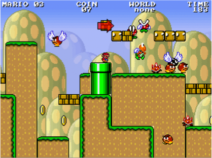

Procedural Content Generation is the use of algorithm (procedures) to create novel, and sometimes customized, game content from scratch. Examples of PCG include generation of levels, maps, tree, cityscapes, weapons, monsters, and quests. PCG is often used as a design-time tool to roughly sketch out level content to be refined by human designers. PCG can also be done at run-time to incorporate individual player differences such as skills or preferences. In this project, we look at run-time PCG to create Mario Bros. game levels customized to individual players’ play styles. This includes (a) learning a model of the player’s play style, and (b) using the model to create a custom level. Fortunately, the first part is already done for you. You must focus on designing and implementing algorithms that use the player information to create something that will evaluate well.
This project will be using the 2011 IEEE Super Mario Bros. Competition infrastructure (Level Generation Track). The description of the competition and some documentation can be found there.
You will write a procedural content generator in the provided Mario Bros. game engine that optimizes level content for different types of players such as those who like to jump, like to collect coins, or like to kill enemies. You will implement a Genetic Algorithm algorithms to tune the layout of the Mario Bros. level.
The Mario Bros. engine is written in Java. You will find the source code in the src/ directory.
You will modify MyLevel.java and MyLevelGenerator.java to implement a Genetic Algorithm in order to satisfy a variety of "player profiles". Each player profile is an evaluation function focused on a specific type of potential player. You are provided with three player profiles:
Each evaluation function for each player profile returns a value between 0-1 (inclusive) to demonstrate how much that player profile "likes" a given level. You can see an example of this in MyLevelGenerator.java.
dk.itu.mario.level.MyLevel:
The default version of this class defines what a "random starting point" looks like for your search-based PCG technique. To start it is set up to simply create a long flat piece of ground, but you are encouraged to make alterations to this (and for your Genetic Algorithm you will have to). You are not allowed to change the length of the level or change the position of the end "gate".
dk.itu.mario.level.generator.MyLevelGenerator:
This class should house the majority of the code for your Genetic Algorithm. We've set it up to demonstrate how to make changes to a single level, how to clone a level, and how to evaluate a level.
You may change MyLevelGenerator as necessary.
You must implement a Genetic Algorithm that produces level conent that is "liked" by different player profiles as given by the three evaluation functions, Scrooge, Killer, and Jumper.
Step 1: Acquire and install apache ant (http://ant.apache.org/).
Step 2: In the homework7 directory, build the game engine:
Step 3: Modify the following files: homework7/src/dk/itu/mario/level/MyLevel.java and homework7/src/dk/itu/mario/level/generator/MyLevelGenerator.java.
Step 4: Run your level generator from the homework7 directory:
To run the codebase you must first compile any changes you've made with the command "ant" in the parent directory. Then if the code compiled correctly you can run the game by calling:
> java -cp bin dk.itu.mario.engine.PlayCustomized <Player Profile Name>
With the three player profiles you have access to:
When you run the application an image will be generated which shows the entire generated level as output_image.png in the parent directory. It will also drop a java GUI window which allows you to play through the level using the arrow keys, a to run, and space to jump.
To submit your solution, upload your modified MyLevel.java and MyLevelGenerator.java.
DO NOT upload the entire game engine.